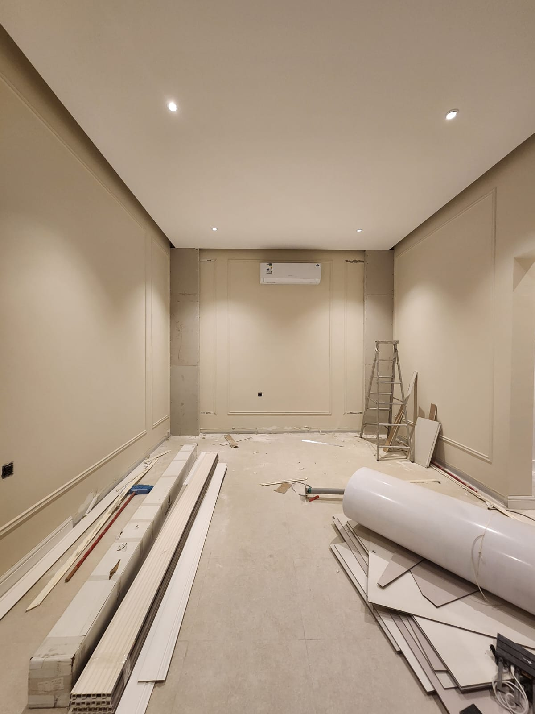
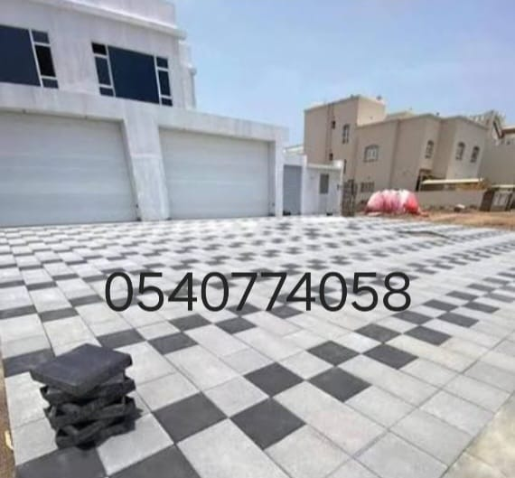
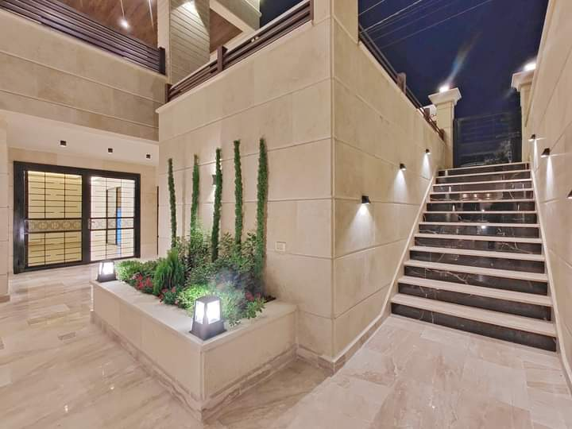
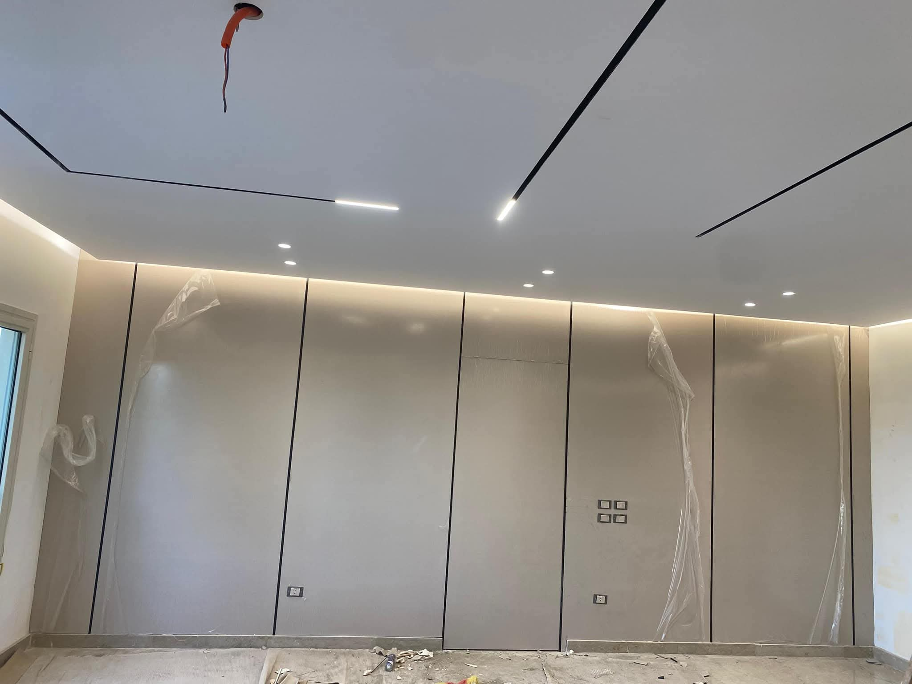
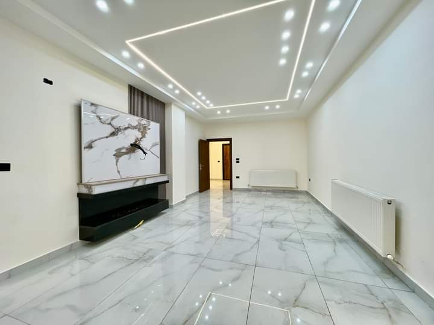
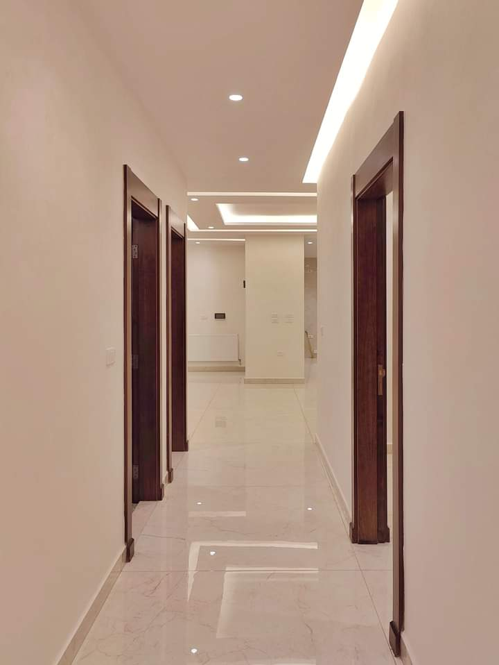
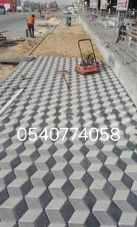
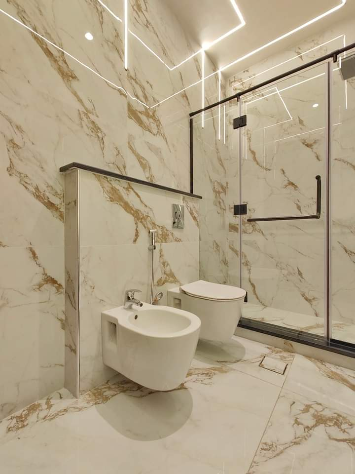
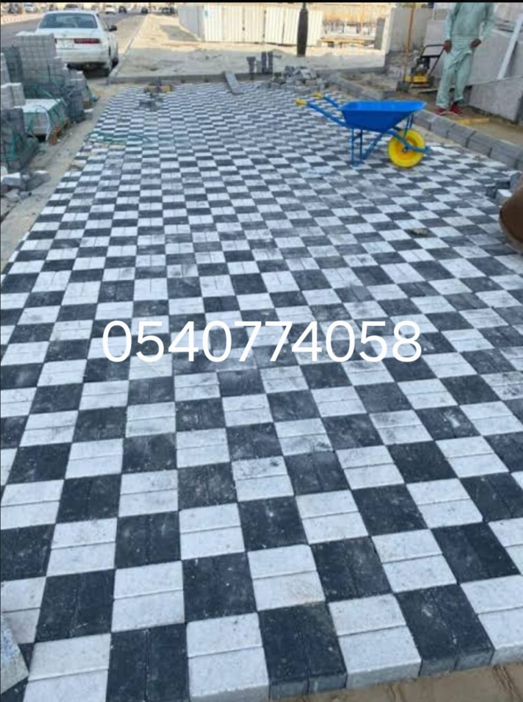

1. افضل مقاول ترميم بالرياض: الدليل الشامل لترميم المنازل والفلل القديمة ومعالجة الشروخ
تتعرض المباني السكنية والتجارية في مدينة الرياض لعوامل مناخية قاسية تفرض أحياناً ضرورة التدخل الهندسي السريع عبر **مقاول ترميم بالرياض** متخصص لإعادة تأهيل المبنى بالكامل. إن عملية ترميم المنازل والفلل لا تقتصر أبداً على إعادة طلاء الجدران أو تغيير الديكورات السطحية، بل هي عملية هندسية معقدة تبدأ بفحص دقيق وشامل للأساسات الخرسانية والأعمدة الحاملة. يبدأ مقاول الترميم المعتمد بدراسة حالة الهيكل الإنشائي وكشف أي شروخ شعرية أو عميقة قد تهدد سلامة المبنى على المدى الطويل. يتم استخدام أحدث تقنيات حقن الإيبوكسي لمعالجة الشروخ وإعادة الصلابة الكاملة للخرسانة المسلحة قبل الانتقال إلى مراحل التكسير الموجه والتشطيبات الداخلية.
كما تشمل عمليات الترميم الشاملة إعادة توزيع التقسيمات الداخلية للمساحات لتتلاءم مع متطلبات الحياة العصرية، بالإضافة إلى تحديث وتطوير شبكات البنية التحتية من مياه وصرف صحي وكهرباء لضمان خلو المبنى نهائياً من أي تسربات مائية خفية قد تسبب تلفاً في الجدران والأسقف. إن الاعتماد على شركة متخصصة في المقاولات العامة وترميم المباني يضمن لك تنفيذ كافة مراحل الترميم بمعايير أمان عالية جداً تمنح عقارك عمراً افتراضياً جديداً ومظهراً فخماً يليق بك وبأسرتك وبأسعار مدروسة وبضمانات حقيقية موثوقة.

2. أسرار تركيب السيراميك والبورسلين بالليزر: كيف تحصل على أرضيات مستوية بدون عيوب؟
تعتبر الأرضيات عنصراً أساسياً وبارزاً من عناصر الجمال والراحة داخل أي منزل عصري، ولذلك فإن عملية تركيب السيراميك والبورسلين تتطلب مهارة حرفية عالية ودقة متناهية لا تقبل الخطأ. تبدأ العملية الأساسية بمعاينة منسوب الأرضيات الخرسانية باستخدام أحدث أجهزة الوزنيات بالليزر لتحديد أي ميول أو تعرجات في السطح ومعالجتها بصنفرتها وتسويتها تماماً قبل البدء بلصق البلاط. يعتمد المبلط المحترف على مواد لاصقة وغراء عالي الجودة ومقاوم للرطوبة والعوامل الخارجية لضمان ثبات البلاط وعدم تطبله مع مرور السنين أو بسبب تغير درجات الحرارة المتباينة في مدينة الرياض.
علاوة على ذلك، يولي المعلمون المختصون اهتماماً بالغاً بوزنيات الفواصل والتقاطعات بدقة بالغة، مع الحرص على تطبيق الترويبة الإيبوكسية المضادة للبكتيريا والمياه، خصوصاً في الأماكن الرطبة مثل المطابخ ودورات المياه، لمنع تسرب المياه إلى الطبقات السفلية تماماً. إن العناية بتفاصيل التركيب والتشطيب النهائي تمنح الأرضيات مظهراً فخماً وراقياً يضفي على المكان رحابة وسعة، ويتحمل الاستخدام الشاق واليومي المستمر لجميع أفراد الأسرة بكفاءة عالية وموثوقية مطلقة لا غنى عنها في كل منزل عصري متكامل ومميز بالرياض.

3. توريد وتركيب الرخام والجرانيت الطبيعي: الفخامة الملكية لواجهات ومداخل الفلل بالرياض
يمثل الرخام والجرانيت الطبيعي عنواناً صريحاً للفخامة والذوق الرفيع الذي لا يزول بمرور الزمن، ولذلك يعتمد عليه المهندسون والمعماريون في تزيين المداخل الكبرى، الواجهات الخارجية، السلالم، والمجالس الفخمة للقصور والفلل بالرياض. يبدأ العمل باختيار أفضل الكتل والقطع الرخامية المستوردة والمحلية الخالية من الشوائب والعيوب لضمان مظهر متناسق ومتناغم. يتطلب تركيب الألواح الكبيرة على الجدران المرتفعة خبرة هندسية دقيقة واستخدام دعامات معدنية وزوايا تثبيت قوية تضمن الثبات والأمان التام طوال العمر الافتراضي للعقار.
ولا تتوقف خدمات الرخام عند حدود التركيب فحسب، بل تمتد لتشمل عمليات الجلي والتلميع والمعالجة الكيميائية وسد الفواصل باستخدام مواد شفافة خاصة تمنح الأسطح مظهر المرآة العاكس المقاوم للخدوش والبقع اليومية. هذا الاهتمام البالغ بالتفاصيل يبرز عروق الرخام الطبيعية ويضفي على الفيلا أو القصر طابعاً ملكياً فريداً يخطف الأنظار ويعزز من القيمة السوقية والجمالية الشاملة للعقار، مما يجعل الاستثمار في الرخام والجرانيت خياراً استراتيجياً ناجحاً ومميزاً لكل باحث عن التميز والارتقاء المعماري في العاصمة.

4. أحدث صيحات التشطيبات والدهانات الداخلية والخارجية لمواجهة مناخ الرياض القاسي
تُعتبر التشطيبات النهائية والدهانات الواجهة الحقيقية والمرآة العاكسة لذوق صاحب المنزل، ولهذا السبب تحرص مؤسسات المقاولات الكبرى على توفير أحدث كتالوجات الألوان والدهانات العالمية والمحلية الملائمة لكافة الأساليب الكلاسيكية والمودرن بالرياض. في القسم الداخلي للمنزل، تُستخدم دهانات بلاستيكية وزخرفية حديثة خالية تماماً من الروائح والمواد الضارة بالبيئة، وتتميز بسهولة فائقة في التنظيف ومقاومة عالية للبقع والاتساخات الناتجة عن الاستخدام اليومي المستمر، مما يحافظ على نضارة الجدران وإشراقتها لسنوات طويلة دون تغير.
أما على صعيد الواجهات الخارجية، فتتطلب طبيعة المناخ الصحراوي في الرياض استخدام أنظمة دهانات متخصصة مثل البروفايل، الجرافيت، ورشات الجزيرة وجودن التي تقاوم درجات الحرارة المرتفعة وأشعة الشمس الحارقة والتقلبات الجوية المفاجئة بكفاءة مذهلة. يبدأ التنفيذ الهندسي بمعالجة الجدران وصنفرتها وسحب طبقات المعجون المتساوية للحصول على سطح أملس تماماً وخالي من العيوب، مما يضمن ثبات اللون وقوته وتحقيق أعلى معايير الجودة والجمال المعماري للمبنى من الخارج والداخل.

5. فنون الديكور العصري: تصميم وتنفيذ أعمال الجبس بورد والأسقف المعلقة
تلعب الديكورات المعلقة والأسقف المنسدلة دوراً جوهرياً في إحداث نقلة نوعية وجذرية في المظهر الجمالي والوظيفي للفلل والشقق والمكاتب التجارية بالرياض. يعتمد تنفيذ الجبس بورد باحترافية عالية على هيكلة معدنية متينة ومقاومة للرطوبة لضمان عدم تعرض الأسقف لأي هبوط أو تشققات مع مرور الزمن. يتيح هذا الفن الديكوري إمكانية تصميم وتشكيل الأسقف المضيئة، الإضاءات المخفية (LED)، مكتبات التلفزيون الجبسية الفاخرة، والفواصل الجدارية الأنيقة التي تفصل بين المجالس والصالات بأسلوب عصري ومبتكر.
تتميز أعمال الجبس بورد بالمرونة العالية في التشكيل والسرعة في التنفيذ والتشطيب النهائي الناعم الذي يتناغم بسلاسة مع الأثاث وباقي تفاصيل الديكور الداخلي للمنزل. وسواء كان هدفك هو إيجاد تصاميم كلاسيكية غنية بالكرانيش والزخارف الهندسية المعقدة، أو تصاميم مودرن وبسيطة تعتمد على الخطوط النظيفة والإضاءات الهادئة والمريحة للأعصاب، فإن التنفيذ الهندسي المحترف يضمن لك تحويل المساحات العادية إلى لوحات فنية مذهلة تلبي طموحاتك وترضي ذوقك الرفيع بكل إتقان.

6. الدليل الهندسي لبناء الملاحق والمجالس الخارجية والاستراحات بالرياض
يحتاج الكثير من ملاك العقارات في الرياض إلى مساحات إضافية ومستقلة لاستقبال الضيوف أو للاستجمام العائلي، وهنا يأتي دور بناء وتشييد الملاحق الأرضية والعلوية، والمجالس الخارجية، والاستراحات وفقاً لأحدث الأكواد الهندسية المعتمدة. يبدأ المشروع بدراسة التربة وإعداد المخططات الإنشائية والمعمارية الدقيقة، مروراً بأعمال الحفر، صب القواعد والأسقف الخرسانية المسلحة، وصولاً إلى أعمال البناء بالطوب العازل ومراحل التشطيبات الشاملة.
يحرص المهندسون على مطابقة تصميم الملحق الجديد مع النمط المعماري للمبنى الأساسي لضمان التناسق البصري والجمالي للعقار. كما تشمل الأعمال تمديد كافة خدمات السباكة والكهرباء والدهانات والسيراميك ليكون الملحق جاهزاً للاستخدام الفوري ومزوداً بدورات مياه مستقلة ووسائل راحة تامة تضمن الخصوصية الكاملة للأسرة والضيوف، مع الالتزام التام بالجداول الزمنية وتقديم ضمانات هندسية شاملة تطمئن قلوب العملاء طوال فترة الاستخدام.

7. أسرار حماية المباني: دور العوازل المائية والحرارية وفوم الأسطح في خفض استهلاك الطاقة
تعتبر مشكلة تسربات مياه الأمطار وارتفاع درجات الحرارة القاسية في الرياض من أكبر التحديات التي تواجه ملاك المباني، ولذلك أصبح تطبيق منظومات العزل المائي والحراري ضرورة حتمية وليست مجرد رفاهية. يبرز عزل الفوم (Polyurethane Foam) كأحد أحدث وأكفأ الحلول الهندسية التي تدمج بين العزل المائي والحراري في طبقة خفيفة الوزن ومتكاملة المكونات، مما يحمي الأسطح الخرسانية بفعالية مطلقة ويقلل بصورة ملحوظة من انتقال الحرارة إلى داخل الغرف، وبالتالي خفض استهلاك أجهزة التكييف وفاتورة الكهرباء.
بالإضافة إلى الفوم، تشمل منظومات العزل استخدام المواد الإيبوكسية والبيتومينية للأسطح والخزانات ودورات المياه، مع إجراء اختبارات دقيقة للمياه لعدة أيام للتأكد من خلو العمل تماماً من أي تسربات محتملة. تساهم هذه العوازل بطريقة حيوية في إطالة العمر الافتراضي للمبنى، وحماية الجدران والأسقف الداخلية من ظهور الرطوبة والتقشرات والروائح الكريهة، مما يوفر بيئة سكنية صحية وآمنة لجميع أفراد الأسرة طوال أشهرو فصول السنة المختلفة دون أي قلق.

8. تأسيس البنية التحتية للمنازل: شبكات السباكة والصرف الصحي والكهرباء بمعايير الأمان العالمية
تُمثل البنية التحتية الخفية لأي مبنى العمود الفقري لاستقراره وسلامته على المدى الطويل، ولذلك تولي مؤسسات المقاولات المتميزة اهتماماً فائقاً لتصميم وتأسيس شبكات السباكة والصرف الصحي والكهرباء بأعلى درجات الدقة والاحترافية. في قطاع السباكة، يتم استخدام أجود أنواع المواسير الحرارية والمواد المقاومة للضغط والحرارة العالية لضمان تدفق المياه بسلاسة تامة، إلى جانب ربط شبكات الصرف بميول هندسية دقيقة تمنع تماماً أي انسدادات أو روائح مزعجة في المستقبل.
وفي الجانب الكهربائي، يتم حماية الأجيال القادمة من الأجهزة والأرواح عبر تأسيس خراطيم الكابلات بعناية فائقة، وتركيب لوحات التوزيع الرئيسية والفرعية، وتوزيع نقاط الإضاءة والأفياش طبقاً لمعايير السلامة العالمية لتجنب أي أحمال زائدة أو التماسات كهربائية خطيرة. كما توفر هذه النظومة خدمات الكشف الإلكتروني المبكر عن التسربات دون الحاجة للتكسير العشوائي للجدران، لضمان استقرار وراحة البال الكاملة داخل منزلك العصري.

9. تنسيق الحدائق الخارجية وتركيب المظلات والسواتر والبرجولات الفاخرة بالرياض
تتحول المساحات الخارجية والفناء المحيط بالمنزل إلى واحة ساحرة ومريحة للاستجمام من خلال خدمات تصميم وتنفيذ المظلات، السواتر، البرجولات، وتنسيق الحدائق المنزلية بالرياض. تُعد مظلات السيارات عنصراً حيوياً لحماية المركبات من أشعة الشمس الحارقة عبر استخدام خامات متينة مثل القماش الكوري المعالج، الخشب المقوى، والحديد المجلفن المقاوم للصدأ والتآكل.
إلى جانب ذلك، توفر السواتر الخشبية والحديدية المرتفعة خصوصية كاملة ومطلقة للأسرة داخل الفلل والاستراحات. وفي ركن الحدائق، يُبدع الفنيون في بناء البرجولات الخشبية، جلسات الحديقة الخارجية، أفران الشواء (الباربكيو)، النوافير، وممرات الحصى والديكورات العشبية المتكاملة التي تضفي حياة وبهجة على المكان، مستخدمين خامات معالجة خصيصاً لتحمل أقسى الظروف الجوية والمناخية بمدينة الرياض لسنوات طويلة وبنفس الجمال والأناقة.

10. ثورة الأرضيات الحديثة: حلول أرضيات الإيبوكسي والأرضيات الصناعية للمستودعات والمعارض
تتطلب المنشآت التجارية، المستودعات، المصانع، الجراجات، والمعارض الكبرى بالرياض نوعية خاصة وقوية من الأرضيات قادرة على تحمل الأثقال الهائلة وحركة المرور المستمرة دون أن تأثر أو تتلف، وهنا تبرز أهمية أرضيات الإيبوكسي (Epoxy Flooring) المتقدمة. تتميز هذه الأرضيات بصلابتها الفائقة ومقاومتها المطلقة للاحتكاك الشديد، المواد الكيميائية، الأحماض، الزيوت، والمياه، مما يجعلها الخيار الهندسي الأول والأنسب للبيئات الصناعية والتجارية الشاقة.
تبدأ عملية التنفيذ بمعالجة السطح الخرساني وصنفرته بدقة بالغة لإزالة أي شوائب قبل تطبيق طبقات الإيبوكسي المرنة والصلبة بألوانها الجذابة واللامعة، أو حتى الرسوم ثلاثية الأبعاد (3D) التي تمنح المعارض والفلل مظهراً مستقبلياً مبهراً وفريداً لكل الزوار. تتميز هذه الأرضيات بسهولة فائقة في التنظيف وعدم امتصاصها للأتربة أو السوائل، مما يضمن بيئة عمل صحية ونظيفة طوال الوقت ومدعومة بضمانات حقيقية تثبت جودة وقوة التحمل على المدى الطويل.